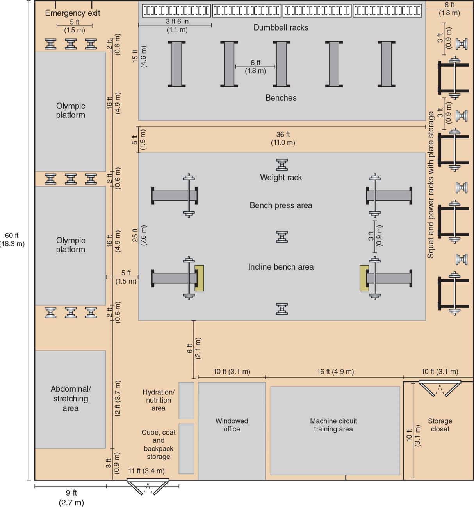
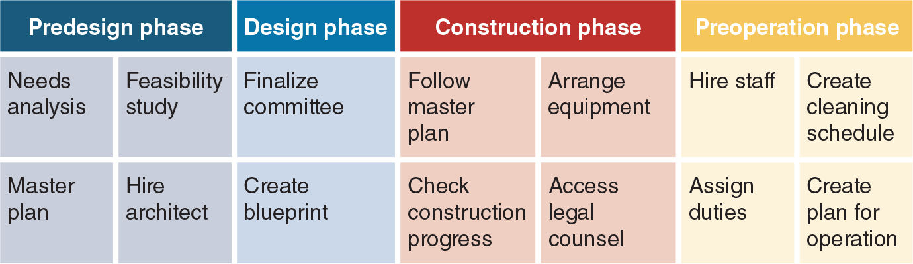

Facility Design, Layout, and Organization(僅供術語對照)| 原文頁碼 p1727–p1774
蓋健身房不是買器材那麼簡單:要按四個階段走流程、按區域分組擺器材、用公式算出每個站位要預留多大空間、讓走道和視線全程暢通,最後再用每日每週的維護清潔清單把一切維持住。每一個死數字背後都是同一個目標:不砸傷人、不互相擋路、不傳病菌。
蓋一座新館是漫長的流程。原書把它劃分為四個階段,順序固定,不能跳步。
第一階段是預設計階段(pre-design phase)。先組建專業委員會,成員要包括建築商、建築師、設計師、律師、財務人員,以及實際使用場館的人,其中至少要有 1 名體能訓練專家,負責提供空間利用和安全方面的專業意見。這個階段要做三件事:需求分析(needs analysis)(設計師與專家合作確立訓練項目的需求,例如「需要多少開放空間」「哪些器材要放進去」)、可行性研究(feasibility study)(用 SWOT 分析(SWOT analysis)評估財務投資能否帶來可持續回報,並比較競爭對手場館)、制定總規劃(master plan)(涵蓋施工計劃、設施設計、預算與竣工後的運營計劃,含員工發展與招聘規劃)。最後一步是以招標(bidding)程序聘請聲譽良好、最好具備體能訓練行業經驗的建築師。
第二階段是設計階段(design phase)。委員會與建築師合作繪製藍圖,並先行確定器材規格,因為器材尺寸直接決定走道如何預留。動線(traffic flow)是設施設計中最重要的考量之一:多組運動員同時在場時,人員通行直接影響場館功能與安全。動線還要保證教練或主管能看全整個場地,避開結構柱、立柱,並兼顧緊急出口。
第三階段是施工階段(construction phase)。這是整個流程中最長的階段。委員會要持續對照總規劃檢查進度;工期延誤會造成巨大財務壓力,所以要聘請法律顧問協助按時完工、避免糾紛。
第四階段是預運營階段(pre-operational phase)。開館前完成室內裝修與美學設計,聘用具備最低資格的人員(NCAA 規定體能訓練專業人員須持國家認可機構認證;許多職業聯盟和戰術崗位要求 CSCS 證照),建立員工發展計劃(如每半年研討會、每週員工會議),把清潔維護職責按週分配到人,責任保險、排班軟體、運動員管理系統等行政文書也要先行就位。
改造現有設施(renovation)的流程與新建類似,只是不用從零開始;仍應成立設計委員會,但不見得需要建築商和建築師。核心原則是:根據使用者的當前與未來需求評估現有器材;能修的修,該賣的賣,賣舊器材的錢可用來購置新設備。
衛星訓練設施(satellite training facility)是主館之外的小型訓練點。空間小的場館應選小型器材(用半架式深蹲架取代全架式)、優先購置多功能器材;沒有專用通道分隔時,器材沿周邊用螺栓固定,房間中央保持開闊,兼顧訓練站轉換和緊急出口。空間再小,也不能犧牲安全間距。任何最低合規設施(minimum compliance)都必須滿足強制建築規範:無障礙設施(輪椅通道、符合美國殘疾人法案(Americans with Disabilities Act, ADA))、暖通空調(HVAC)、電氣、照明、地板、儲物、面積、安全空間與淨空高度。
戶外訓練區可設在比賽場地旁或力量房邊(如車庫門連通)。要點:地面抓地力適當、暴雨後不能積水、注意地面溫度(人造草皮會比周圍地面燙,可能燙傷)、要求穿著合適的鞋服,並像室內一樣張貼應急預案。每天搬進搬出的器材要定期檢查,因為日曬雨淋會加速磨損;改用配有結實輪子的推車搬運,更符合人體工學。
建館前必須評估體育項目的需求。設計者要能回答:有多少運動員同時使用(高峯人數決定場館規模,消防等法規另定房間容納上限)?訓練目標是什麼(要做增強式與敏捷訓練,就須預留草皮或場地)?使用者構成如何(老年族羣可能需要更多固定式器械而非自由重量)?訓練體驗怎麼設計(新手多做自重訓練,老手多做舉重)?課程如何排(多組同時訓練要分區,最好錯開時段,以維持建議的教練與運動員比例(staff-to-athlete ratio)並保證器材夠用)?需要哪些技術(Wi-Fi、蜂巢訊號、測試設備的專用空間與充電存放)?現有器材哪些要修、哪些要換(鋼索磨損的滑輪柱,換掉鋼索前應停用)?
本章沒有規定固定的教練與運動員比例數字,只指出「同時訓練的人數決定所需監督人力」:錯開時段可把比例維持在建議值,人手不足時靠排班補足。本章給的是空間死數字:每人至少 100 平方英尺(9.3 平方米),涵蓋運動員、體能訓練專業人員、其他工作人員與在場所有人的全部必要空間。空間不足的傷害比缺一臺專屬器材大得多,預算受限時應優先保留空間。
位置與樓板荷載。力量房最好設在一樓、遠離辦公室與教室,避免重物落地和音樂噪音幹擾他人。設在非一樓時,樓板承重至少要達到每平方英尺 100 磅(4.8 千牛/平方米),才能撐住重型設備與掉落的重物。
監管位置。監督辦公室要位於中心位置、視野開闊,配窗戶或鏡子,能觀察所有進出人員;可以把辦公室架在健身房地面上方,拉高視角。時鐘與資訊螢幕也要擺在教練從任何角度都看得到的地方。
無障礙通行。超過 0.5 英寸(1.3 釐米)的高度差就要設坡道或升降機;坡道每升高 1 英寸,長度要 12 英寸(坡度約 1:12),坡道頂部與底部都要設平臺。樓梯邊緣設防滑條。每處至少一部輪椅使用者能用的電話,放在入口或辦公區附近,方便意外發生後第一時間求助。照明開關、飲水機、滅火器、自動體外除顫器(automated external defibrillator, AED)都要讓輪椅使用者夠得到。健身房要有雙開門或車庫門,便於大件器材進出。
天花板。建議淨高 12–14 英尺(3.7–4.3 米),足以容納跳箱、垂直跳、舉重等爆發動作中人體與器械的總高度;過頭藥球投擲可能需要額外空間。檢查清單把「至少 12 英尺、無低垂橫梁燈具」列為硬性要求。
地板。常見方案是橡膠地板(卷材、地磚、墊片)與抗菌地毯;室內人造草皮適合動態熱身、增強式、敏捷與雪橇推等貼地訓練。橡膠是首選材料:保護底層地面、緩衝持久,也比地毯好清潔、更耐用;運動區地面要防滑。舉重臺須以木為核心、外覆橡膠,以符合比賽規則;使用量大的場館宜改用嵌入齊平式舉重臺,比架高式安全,不會絆倒。
照明。一般健身區地面照度 20–30 英尺燭光(200–300 勒克斯);專屬阻力訓練與團體區可提高到 50 英尺燭光(500 勒克斯)。光線分佈要均勻,避免陰影與眩光,尤其要照顧躺在臥推凳、運動墊上仰視的人。色溫 4000K–5000K 接近日光,一般認為最適合力量房;LED 因壽命長、能效高而成為熱門選擇;鏡子可反射光線,輔助照明。
溫度、濕度、通風。適宜場館溫度為 68°F 至 78°F(20–26°C),許多資料建議的最佳值為 68°F 至 74°F(20–23°C);HVAC 要能對各區域獨立調節。相對濕度不超過 60%,否則細菌滋生、器材生鏽;鄰近泳池要負壓排氣,防止水氣和氯氣飄進訓練區。通風按 ANSI/ASHRAE 62.1 標準執行:室內空氣每小時至少交換 8–10 次,理想 12–15 次;有氧區需要的空氣交換率高於力量區。使用風扇時,每 1200 平方英尺(111 平方米)建議配 2–4 臺。
音響。音量控制在 90 分貝以下,讓運動員聽得見指令;揚聲器放在高於所有器材的位置、裝在角落讓聲音向中央擴散;不建議運動員戴耳機:耳機聲會蓋過教練提示,也會降低緊急情況下的警覺性。瑜伽、舞蹈區要用吸音材料;吸音橡膠地板能降低落地衝擊與器械碰撞的噪音。
用電。力量中心需要的插座比普通建築多;登山機、橢圓機、跑步機等大功率器材可能需要高壓插座;電路必須接地並裝設接地故障斷路器(ground-fault circuit interrupter, GFCI)插座。電源線絕不能橫穿訓練區、安全間距區、走道或保護者站位;器材插座應離地安裝,充電站設在辦公室或儲藏區。
鏡子。鏡子提供即時視覺回饋,有助於空間感知與安全。安裝尺寸有硬性規定:鏡面離任何器材(如啞鈴架)至少 6 英寸(15 釐米),鏡子下緣離地至少 20 英寸(51 釐米),防止重物滾入鏡底、撞碎玻璃;標準槓鈴片直徑 18 英寸(46 釐米),與鏡面之間還要留 2 英寸(5 釐米)間隙。藥球投擲訓練要用堅固牆面(如水泥磚牆)。
補水、更衣與儲物。飲水機與灌裝站應遠離訓練區、不擋動線,常設在入口或更衣室旁;食品區要符合 FDA、美國農業部、CDC 的食品安全規範。場館要設專門儲物空間,備用器材、清潔用品、損壞器材分開存放,死角與啞鈴架下方最容易堆積雜物、造成傷害。滅火器、AED、心肺復蘇設備與完整急救箱必須放在場館內或附近立即可取的位置。沒有更衣室時,要指定個人物品存放區。
佈置器材前先畫平面圖。器材要按功能分組:拉伸熱身區、循環訓練區、敏捷與增強式區、自由重量區、奧舉區、阻力訓練器械區、有氧區、測試區。分區的好處是各組同時訓練互不幹擾,動線也更清楚。
擺放的硬性規定:自由重量器材和深蹲架沿牆擺,器材之間留通道;也可以成排「背對背」擺放,既省空間又防擁擠。器械架、槓鈴、啞鈴之間至少留 3 英尺(0.9 米),需要保護者時還要加寬。主動線通常有兩到三條,寬度 5–7 英尺(1.5–2.1 米),場內任何位置都能無阻礙地看到出口。循環式固定器械之間至少 30 英寸(76 釐米),最好 36 英寸(91 釐米)。佈局要配合視線可及性:較矮的器械放房間中央,教練纔看得到全場;較高的器械用螺栓固定於地面、立柱或牆面,防止傾倒。有氧器材(跑步機、橢圓機、登山機、滑雪機、划船機、固定自行車)集中在單獨區域排列,靠牆取電,前方和後方都要留緩衝。運動測試器材放專屬固定位置,測試纔有一致性、有效性和可靠性。高使用率的器材(深蹲架、臥推凳、跑步機)在各自區域內均勻分散設多組,不要全部堆在一處形成排隊瓶頸。有立柱、橫梁的場館,要把它們列入佈局考量,指定專屬訓練與存放區,別讓結構變成障礙。
每種訓練都要算出「使用者空間加安全緩衝(safety buffer,安全墊)」的矩形或扇形。原書表 25.2 給的是通用算法:深度方向加 3 英尺(0.9 米)單側緩衝,寬度方向加 6 英尺(1.8 米)雙側緩衝,具體數字視器材實際長度而定。舉例:6 英尺臥推凳加 7 英尺奧舉槓,站位是(6+3)×(7+6)=117 平方英尺;10 英尺使用者空間的深蹲架配 7 英尺槓,是 10×(7+6)=130 平方英尺;地雷管動作以槓鈴為半徑掃出 90 度扇形,面積是 π×(槓長+2 英尺站位+3 英尺緩衝)²÷4,7 英尺槓約 113 平方英尺;斜角懸吊划船則按「距錨點距離+運動員身高+3 英尺」乘「2+6 英尺」計算,身高 6 英尺者約 96 平方英尺。完整公式與更多示例見表 6.3。有氧器材每臺約需 40–60 平方英尺(3.7–5.6 平方米),逐臺數值見表 6.2。懸吊訓練錨點的理想高度為離地 7–9 英尺(2.1–2.7 米),避開門口;登山扣要用螺絲鎖定式,美國 OSHA 要求防墜登山扣最小抗拉強度 5000 磅(22 千牛)。室內短衝道和草皮要預留末端減速區;20 米長的跑道無法滿足 Yo-Yo 間歇恢復測試,因為每次間歇之間另需 5 米慢跑緩衝距離。
原書在新建流程中提到以招標方式選擇供應商,並要求評估、維修或出售現有器材;完整的採購順序依業界慣例(NSCA 標準做法)是:需求評估 → 產品評估 → 試用 → 採購決定 → 送貨檢驗 → 安裝。送貨時當場點收、核對規格、檢查損傷;安裝時,高重心器材要立即以螺栓固定,驗收通過才開放使用。舊器材的處置:小修即可用的就修,值得升級的買配件(例如滑輪柱換新鋼索與附件),狀況差的出售變現貼補新設備。採購清單的依據永遠是 3.3 節的需求評估結果,不是廠商目錄。
所有表面要定期清潔、消毒、殺菌。經常接觸、容易長菌的器材(坐墊、乙烯基貼皮)要每天或隔天消毒一次。CDC 的建議程序是:先清潔去除污垢碎屑,再用 EPA 註冊的消毒產品殺滅病原體。毛巾抹布要用洗滌劑以最高水溫清洗,並徹底晾乾。木製舉重臺檢查裂縫木刺;橡膠地磚縫隙要小、不能溢膠;地毯定期吸塵防黴。牆面、天花板至少每一到兩週除塵清潔;吊頂固定物(風扇、音箱、懸掛器材)定期檢查防掉落;固定器械的地腳螺栓每週鎖緊檢查;磨損鋼索滑輪立即檢修。
頻率分三級(見表 6.4):日常查地板平臺破損、清潔消毒軟墊與接觸皮膚的表面和運動墊、檢查鏡窗、檢查掛鉤錨點、檢查全部器材磨損與鬆動部件、器材歸位、清垃圾;每週兩三次清潔潤滑器材活動部件、選片式器械導杆,保持奧舉槓轉動順暢;每週一兩次清天花板燈具、牆面、燈罩、風扇、通風口、時鐘和揚聲器,除鏽、補鎂粉。故障器材要掛「停用」牌,無法修復的移出場區另行存放。清潔劑上鎖存放、清楚標示、僅限成人取用;工具收進工具箱,放在不易取得之處;用品定期盤點補貨。資產維護紀錄的價值在於:省錢、保平安,訴訟時也能證明已盡責任。
| 項目 | 數值 | 備註 |
|---|---|---|
| 每人最低建議空間 | 100 平方英尺(9.3 平方米) | 含運動員、教練、所有在場人員的全部必要空間 |
| 器械架/槓鈴/啞鈴間距 | ≥3 英尺(0.9 米) | 需保護者時再加寬;奧舉槓兩端間距 ≥36 英寸(91 釐米) |
| 固定器械站間距 | ≥30 英寸(76 釐米),最佳 36 英寸(91 釐米) | 循環訓練區、有氧區、自由重量長凳通道通用 |
| 主動線(走道)寬度 | 5–7 英尺(1.5–2.1 米) | 通常兩到三條;隨時看得到出口 |
| 場館溫度 | 68–78°F(20–26°C);最佳 68–74°F(20–23°C) | 學習問題官方答案取 68–74°F |
| 相對濕度 / 換氣 | 濕度 ≤60%;換氣 ≥8–10 次/小時(理想 12–15) | 風扇每 1200 平方英尺(111 平方米)配 2–4 臺 |
| 照明 | 一般 200–300 lx;專屬阻力/團體區可 500 lx;色溫 4000–5000K | 避免陰影與仰臥眩光 |
| 淨高 / 樓板荷載 | 淨高 ≥12 英尺(建議 12–14);荷載 ≥100 磅/平方英尺(4.8 kN/m²) | 非一樓場館必查 |
| 鏡子安裝 | 離器材 ≥6 英寸(15 釐米);下緣離地 ≥20 英寸(51 釐米) | 18 英寸槓鈴片與鏡面留 2 英寸(5 釐米) |
| 無障礙坡道 | 高差 >0.5 英寸(1.3 釐米)設坡道;升高 1 英寸配長 12 英寸 | 坡道兩端設平臺;ADA 規範 |
| 有氧器材佔地 | 每臺約 40–60 平方英尺;跑步機 53、划船機 48 平方英尺等 | 逐臺數值見表 6.2 |
| 懸吊錨點 / 登山扣 | 錨點離地 7–9 英尺;登山扣抗拉 ≥5000 磅(22 千牛)、螺絲鎖定 | 避開門口;使用前檢查固定點 |
| 音響/音量上限 | <90 分貝 | 揚聲器高位、角落;不建議耳機 |
| 維護頻率 | 日常 / 每週 2–3 次 / 每週 1–2 次三級 | 內容見表 6.4;軟墊等接觸面每日消毒 |
| 中文術語 | English | 一句話定義 |
|---|---|---|
| 需求分析 | needs analysis | 設計師與專家合作確立體能訓練項目對空間與器材需求的第一步。 |
| 可行性研究 | feasibility study | 評估財務投資能否帶來可行且可持續回報的分析,使用 SWOT 架構。 |
| SWOT 分析 | SWOT analysis | 分析優勢、劣勢、機會與威脅的四象限評估法。 |
| 總規劃 | master plan | 涵蓋施工、設計、預算與竣工後運營的整體藍圖文件。 |
| 預設計階段 | pre-design phase | 新建流程第一階段:需求分析、可行性研究、總規劃、聘請建築師。 |
| 設計階段 | design phase | 定案委員會、繪製藍圖、以動線為先確定器材規格的第二階段。 |
| 施工階段 | construction phase | 開工到竣工,流程中最長的階段,需法律顧問保障工期。 |
| 預運營階段 | pre-operational phase | 開館前的裝修、聘人、制度與排班準備。 |
| 動線/人流 | traffic flow | 人員在場館內的通行路徑,設施設計最重要的考量之一。 |
| 安全緩衝(安全墊) | safety buffer | 訓練站位周邊預留的額外空間,防止人員碰撞、重物砸到鄰站。 |
| 最低合規 | minimum compliance | 滿足強制建築規範(ADA、HVAC、電氣、淨高等)的場館門檻。 |
| 視線可及性 | sightlines | 主管從監管位置對全場人員的無遮擋視野。 |
| 暖通空調 | HVAC | 供熱、通風與空調系統,須能對場館各區域獨立調節。 |
| 美國殘疾人法案 | Americans with Disabilities Act (ADA) | 規範輪椅通道、坡道比例與無障礙設施的法律。 |
| 接地故障斷路器 | ground-fault circuit interrupter (GFCI) | 發生漏電時瞬間斷電的保護插座,健身房必備。 |
| 自動體外除顫器 | automated external defibrillator (AED) | 急救設備之一,須放在輪椅使用者可及、立即可取處。 |
| 招標 | bidding | 公開比價遴選建築師或供應商的程序,通常由合理最低價者得標。 |
| 衛星訓練設施 | satellite training facility | 主館之外的小型輔助訓練點,器材宜小宜多功能、沿牆固定。 |

| 區域 | 典型器材 | 空間與佈局要求(以原書為準) |
|---|---|---|
| 拉伸・熱身區 | 泡滾、軟組織滾筒、墊子、彈力帶、跳繩 | 開放區域;墊子非必需,但可避免直接貼著硬地板;區內不得堆放長凳與器械 |
| 循環訓練區 | 固定式器械組合(上下肢、推拉分組) | 器械間距 ≥30 英寸(76 釐米),最佳 36 英寸(91 釐米);方便受傷運動員轉換 |
| 自由重量區 | 啞鈴/槓鈴架、臥推凳、壺鈴、六角槓 | 架、槓、啞鈴間距 ≥3 英尺(0.9 米),需保護者再加寬;沿牆或背面相對成排;壺鈴動態動作要預留回轉空間 |
| 奧舉區 | 舉重架、嵌入式/架高式舉重臺 | 臺為木芯膠面;深度 8–10 英尺 ×(槓長+6 英尺)≈130 平方英尺;舉重架螺栓固定於地面 |
| 站立式力量架 | 深蹲架、半架 | 深度 8–10 英尺 ×(槓長+6 英尺);臥推站位(凳長+3 英尺)×(槓長+6 英尺)≈117 平方英尺 |
| 地雷管區 | 地雷管樞紐、槓鈴 | 90 度扇形:π×(槓長+2 英尺站位+3 英尺緩衝)²÷4,7 英尺槓約 113 平方英尺 |
| 懸吊訓練區 | 吊環、吊帶、登山扣 | 錨點離地 7–9 英尺、避開門口;斜角站位依身高另算(例 96 平方英尺);登山扣抗拉 ≥5000 磅 |
| 有氧區 | 跑步機、橢圓機、划船機等 | 每臺約 40–60 平方英尺(見表 6.2);集中排列、靠牆取電、臺前臺後留空間 |
| 敏捷/增強式/短衝 | 室內草皮、短衝道 | 末端留減速區;20 米跑道做 Yo-Yo 測試需額外加 5 米恢復區;道內不得堆放器材 |
| 運動/體能測試區 | 測力臺、等長中段大腿拉力架、測試車/跑臺 | 集中於固定專屬位置,保證重複測試的一致性、有效性、可靠性 |
| 有氧器材 | 所需最小樓面空間 |
|---|---|
| 直立式自行車 | 30 平方英尺(2.8 平方米) |
| 滑雪訓練機(SkiErg) | 31 平方英尺(2.9 平方米) |
| 爬樓梯機 | 35 平方英尺(3.3 平方米) |
| 躺式自行車 | 38 平方英尺(3.5 平方米) |
| 橢圓機 | 47 平方英尺(4.4 平方米) |
| 划船機 | 48 平方英尺(4.5 平方米) |
| 跑步機 | 53 平方英尺(4.9 平方米) |
| 訓練類型 | 空間公式 | 原書示例 |
|---|---|---|
| 俯/仰臥槓鈴(臥推、臀推) | (凳長 6–8 英尺 + 3 英尺) × (槓長 4–7 英尺 + 6 英尺) | (6+3)×(7+6)=117 平方英尺;公制例約 9 平方米 |
| 站立槓鈴(二頭彎舉、直立划船) | (站位 2 英尺 + 3 英尺) × (槓長 + 6 英尺) | (2+3)×(4+6)=50 平方英尺 |
| 站立式力量架(後蹲、肩推) | (使用者空間 8–10 英尺) × (槓長 5–7 英尺 + 6 英尺) | 10×(7+6)=130 平方英尺;公制例約 12 平方米 |
| 奧舉(嵌入橡膠地板) | (使用者空間 8–10 英尺) × (槓長 6–7 英尺 + 6 英尺) | 10×(7+6)=130 平方英尺 |
| 奧舉(架高木平臺) | (臺長約 8 英尺 + 3 英尺) × (臺寬約 8 英尺 + 6 英尺) | 公制例(2.5+1)×(2.5+2)≈16 平方米 |
| 地雷管動作 | π × (槓長 + 站位 2 英尺 + 緩衝 3 英尺)² ÷ 4(90 度扇形) | π×12²÷4≈113 平方英尺;公制例約 12.5 平方米 |
| 懸吊訓練(斜角) | (雙腳距錨點距離 + 身高 + 3 英尺) × (站位 2 英尺 + 6 英尺) | (3+6+3)×(2+6)=96 平方英尺;垂直使用公制例約 8 平方米 |
| 頻率 | 維護與清潔任務(摘譯自 NSCA 維護安全檢查清單) |
|---|---|
| 每日 | 檢查全部地板與木製平臺破損;清潔消毒所有地板、坐墊軟墊、接觸皮膚的器材面、運動墊、飲水與營養區;檢查固定器材與地面/牆/天花板的連接、鏡窗破損、牆鉤與懸吊錨點;檢查器材磨損與鬆動皮帶/螺絲/鋼索/鏈條;保護墊裂縫檢查;器材歸位;清垃圾 |
| 每週 2–3 次 | 清潔並潤滑所有器材活動部件與有氧器材;潤滑選片式器械導杆;確保奧舉槓轉動順暢、潤滑並鎖緊 |
| 每週 1–2 次 | 清潔天花板燈具與天花板磚、牆面、燈罩、風扇、通風口、時鐘、揚聲器;更換燈泡與破損天花板磚;除鏽;補鎂粉;移除或掛上「停用」牌;抹布與健身毛巾每次使用後清洗消毒 |
| 至少每 1–2 週 | 牆面除塵清潔(表面清潔清單要求);鏡子與窗戶污漬至少每週清除;裸管/風管式開放天花板按需清潔 |

Q1.(選擇題)力量和體能訓練設施的建議最佳溫度範圍是? (A) 58–64°F (B) 64–68°F (C) 68–74°F (D) 74–78°F
Q2.(選擇題)每人最低建議空間是? (A) 70 平方英尺 (B) 100 平方英尺 (C) 130 平方英尺 (D) 144 平方英尺
Q3.(選擇題)力量架兩側的最小推薦間距是? (A) 3 英尺 (B) 4 英尺 (C) 6 英尺 (D) 7 英尺
Q4.(選擇題)場館內指定主動線的建議寬度是? (A) 2–3 英尺 (B) 3–5 英尺 (C) 5–7 英尺 (D) 大於 7 英尺
Q5.(是非題)健身房鏡子的下緣應至少距離地面 12 英寸,以防槓鈴片滾入撞破鏡面。
Q6.(選擇題)使用懸吊訓練器時,下列何者是安全要點? (A) 定期檢查錨點與附件是否依負荷正確固定 (B) 盡量固定在門口以節省空間 (C) 用單鎖登山扣即可 (D) 懸吊區不需要安全緩衝
Q7.(是非題)新建設施四階段中,施工階段是整個流程最長的階段,完成後應立即開幕運營。
Q8.(選擇題)跑步機每臺所需的最小樓面空間約為? (A) 30 平方英尺 (B) 38 平方英尺 (C) 47 平方英尺 (D) 53 平方英尺
Q9.(是非題)清潔器材時,應先用 EPA 註冊消毒劑消毒,再清潔去除污垢。
Q10.(選擇題)室內場館空氣交換次數的最低建議是每小時? (A) 4–6 次 (B) 8–10 次 (C) 16–18 次 (D) 20–25 次
先把上一節題目做完,再回頭對照本頁。
1. Q1.(選擇題)力量和體能訓練設施的建議最佳溫度範圍是? (A) 58–64°F …
Ans:C — 適宜範圍 68–78°F,但許多資料的建議最佳值是 68–74°F(20–23°C),原書學習問題正解為 C。
2. Q2.(選擇題)每人最低建議空間是? (A) 70 平方英尺 (B) 100 平 …
Ans:B — 每人至少 100 平方英尺(9.3 平方米),涵蓋在場所有人的全部必要空間。
3. Q3.(選擇題)力量架兩側的最小推薦間距是? (A) 3 英尺 (B) 4 英尺 …
Ans:A — 器械架、槓鈴、啞鈴之間至少 3 英尺(0.9 米),需要保護者時另加寬。
4. Q4.(選擇題)場館內指定主動線的建議寬度是? (A) 2–3 英尺 (B) 3 …
Ans:C — 通常兩到三條主通道,寬 5–7 英尺(1.5–2.1 米),且全場可直達出口。
5. Q5.(是非題)健身房鏡子的下緣應至少距離地面 12 英寸,以防槓鈴片滾入撞破鏡 …
Ans:✕ — 應至少離地 20 英寸(51 釐米),且鏡面離器材至少 6 英寸。
6. Q6.(選擇題)使用懸吊訓練器時,下列何者是安全要點? (A) 定期檢查錨點與附 …
Ans:A — 每次使用前要檢查固定點是否穩固;要避開門口,登山扣需螺絲鎖定且抗拉 ≥5000 磅,安全緩衝照常計算。
7. Q7.(是非題)新建設施四階段中,施工階段是整個流程最長的階段,完成後應立即開幕 …
Ans:✕ — 施工最長沒錯,但之後還有預運營階段:裝修、聘請有證照人員、排定清潔維護、備妥行政文書,才能開館。
8. Q8.(選擇題)跑步機每臺所需的最小樓面空間約為? (A) 30 平方英尺 (B …
Ans:D — 表 25.1 規定跑步機 53 平方英尺(4.9 平方米),且臺前臺後都要另留緩衝。
9. Q9.(是非題)清潔器材時,應先用 EPA 註冊消毒劑消毒,再清潔去除污垢。 …
Ans:✕ — CDC 建議的順序相反:先清潔去除污垢碎屑,再用 EPA 註冊消毒產品殺滅病原體。
10. Q10.(選擇題)室內場館空氣交換次數的最低建議是每小時? (A) 4–6 次 …
Ans:B — 至少每小時 8–10 次,理想 12–15 次,防止異味與空氣停滯。